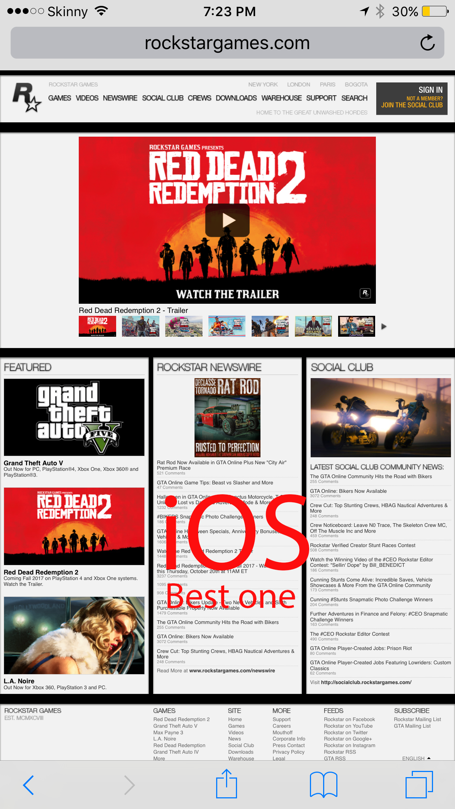
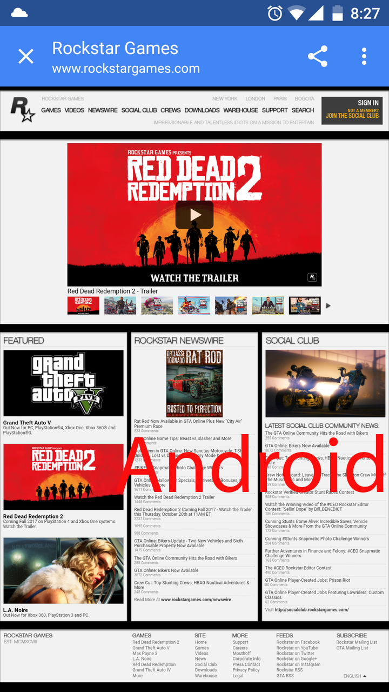

To start this part, I did some tests with rockstarhgames.com and two famous mobile operating system(iOS and Android). In all tests, the home page and other pages loaded nearly five - nine seconds. This time actually is normal and middle time for mobile OS. All multimedia elements which I described in multimedia section, work properly and looks like normally. I did not see any problems when I used the site on mobile devices.
 
Slideshow presneted in left and right parts in PC version, is not used in mobile version. In these two images we can see that veb-site have appropriate view and can be easelly using by toch oriented devices. Howvever, it has disadvantage that we need always use zoom in all pages. After loading the page, The scale set for desctop OS format and for convinient reading the visitor need to zoom in needed part of web-page. Maybe this problem only in devices with small display, but I tested on devises with 5 and 5.5 inchs display resolution. I found another disadvantage, When any page is loading in mobile os, the server did not redirect to mobile web-site version. The site did not have mobile version, all settings for mobile os in CSS file and, i found some compobility code in home page. I think, this is serious problem and this is reason to use zoom all time in all web-pages. In novadays, many companies are developing two wersions of sites, useual for desctops and mobile because it is technologies of future.
I also found some compabilite code on main page for Internet exploer and Mobile browser. It is show, that developers do not forget about visitors, who still use these browsers and think about mobile OS, but better way to develop special version for mobile OS, maybe it is question of time, which will be realised after some times.
As in requirements in assignment instruction, I have visited the http://wave.webaim.org and have tested the rockstargames.com. The resault was shocking for me.
The servies found 6 errors, 9 alerts and 32 features. Hovewer, after looking and assess errors, alerts and features, I understand that, all of this errors are not nessesary, because the service can not recognise font, which used in site and all pictures which have hyperlinks it recognise it as empty links. So this result is incorrect and I think that rockstargames web-site does not have any critical syntax errors. The test on Eval Access site also find 1 error which also did not recognise text in hyperlinks and find 226 warnings which all did not recognise text and images on hyperlinks.
Also Google chrome browser console have found seven errors and 1 warnning, but all errors are that some resources like pictures, did not loaded. This is not critical errors, maybe developers delete some old pictures and forgot change or delete hyperlinks on them. It is also not critical and did not effect on load time.
The web-site used many search engine optimization technologies. First of all, the web-site have lots of tags.It also use <meta> tags with keywords to show the search engine what to look. These tags contain some useful keywords which are so helpful for searching. The web-site used links to sochial networks in most of pharagraphs and many hashtags were founded on most of news. It is new style to populise websites. The web site accept and activelly use google analitics and statistics servises, which also help to populase the web-site. Also the rockstargames use intersting method to advertise their site, by add and print web-site links in all their products.
The popularity is very huge:
On the below picture, we can see that the web-site has 18.10 milions visits and this is very huge number of visits and this tell us that, web site very populised and have perfect SEO. In the period between june and july the web-site had more visits, nearly 23 millions. It is normal change, because most of games are visiting the web-site seasonally. Often, when new games or DLS coming. Interesting fact is, that most of traffic coming from United States and Russian Federation.